Rampart: a CMMC Level 2 readiness platform
At a glance
Goal: a self-hosted app where one defense contractor assesses all 320 NIST 800-171A objectives and gets a correct SPRS score, a rules-checked POA&M, linked evidence and policies, and an exported SSP .docx.
Shipped:
- Local accounts (admin, contributor), CSRF-protected writes, and an append-only audit log.
- An assessment workspace with a live SPRS score and a what-if mode that saves nothing.
- A POA&M that refuses what 32 CFR 170.21 refuses, with a 180-day closeout clock.
- Evidence with SHA-256 versions and a CUI flag that refuses files; policies linked to requirements.
- A system profile, the SSP as a .docx, and a dashboard that stamps HOLD or ACCEPT.
Wall time is first to last commit, pauses included. Agent context sums final context sizes, not tokens billed.
Look here first
packages/rules/src/poam/regulation.ts: every regulatory number (88, 180 days, the six barred requirements, the point limits) is typed here from the Cornell text of 32 CFR 170. A wrong value means a wrong score.apps/api/src/auth/guard.ts: the deny-by-default sign-in and CSRF gate. A route registered outsideregisterApiRoutesskips it.apps/api/db/migrations/0001to0004: four migrations, including triggers that make the audit table append-only. This is why the human merges #13.apps/api/storage/local.tsandevidence/repository.ts: the CUI refusal and the file store. Least checked against real use: V1 is not approved for CUI.apps/api/ssp/model.ts: the SSP outline has no official template behind it, and nobody but the engineer has opened the .docx in Word.
Key features
A user can go from an empty install to an assessed baseline, a stamped dashboard and an SSP; the screenshots below are a seeded demo assessment.
| Feature | What changed | Shown by |
|---|---|---|
| Setup and sign-in | First visit creates the admin; every route needs a session | result: wrong password refused, cookie unreadable by the page |
| Objective status, live score | 320 objectives, score updates on save | screenshot below |
| What-if | Try changes, see the score, save nothing | screenshot below |
| Dashboard stamp | Ruler, frame, HOLD or ACCEPT, blockers | screenshots below |
| POA&M | Rule-checked items, countdown, closeout | screenshot below |
| Evidence | Versioned files with SHA-256; CUI items hold a reference | screenshot below |
| Policies | Versioned files linked to requirements | screenshot below |
| System profile and SSP export | 13 profile fields; Word export | screenshot below |
| Audit log and settings | Append-only log; type and Conditional Status Date | screenshot below |
Dashboard: HOLD at 72 (3.1.20 Not Met, 11 blockers)
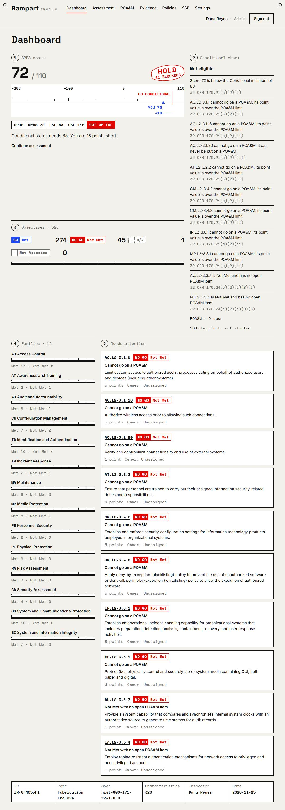
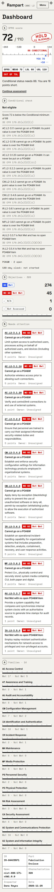
Dashboard: ACCEPT at 106 (every Not Met item on an open POA&M)
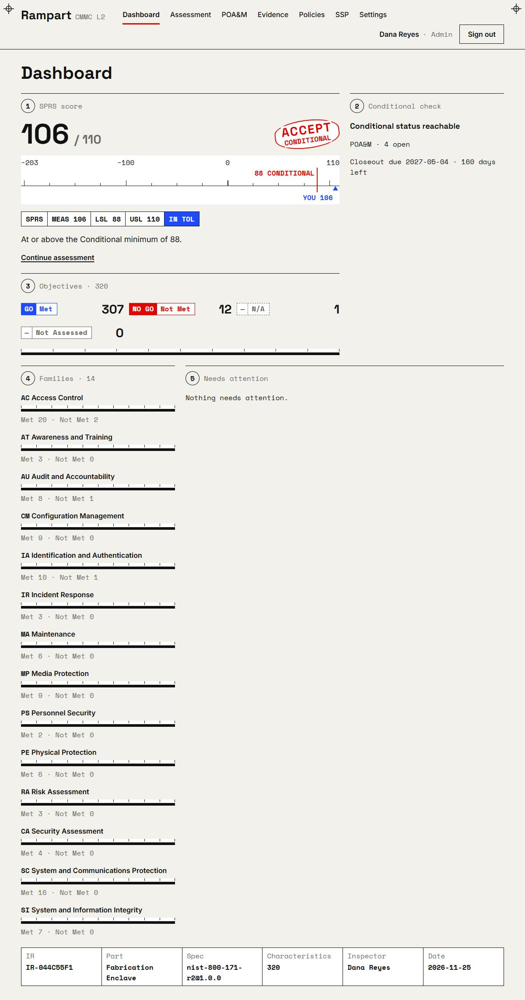
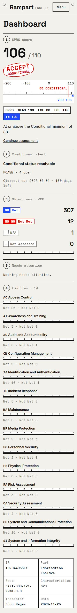
Assessment with what-if (+1 from fixing 3.1.20)
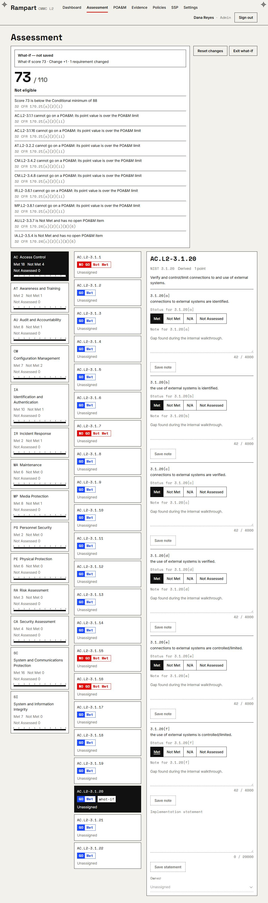
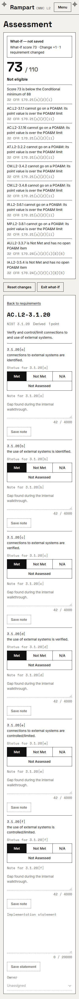
More screens: POA&M, Evidence, Policies, SSP, Settings
POA&M
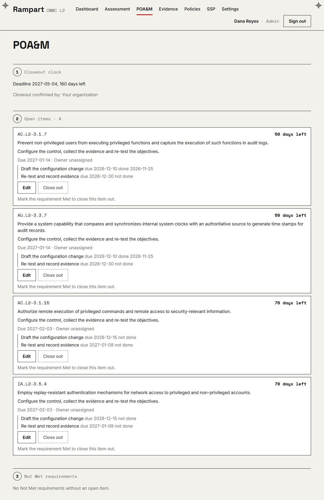
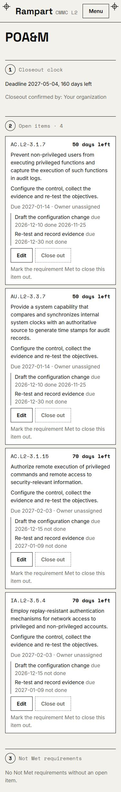
Evidence
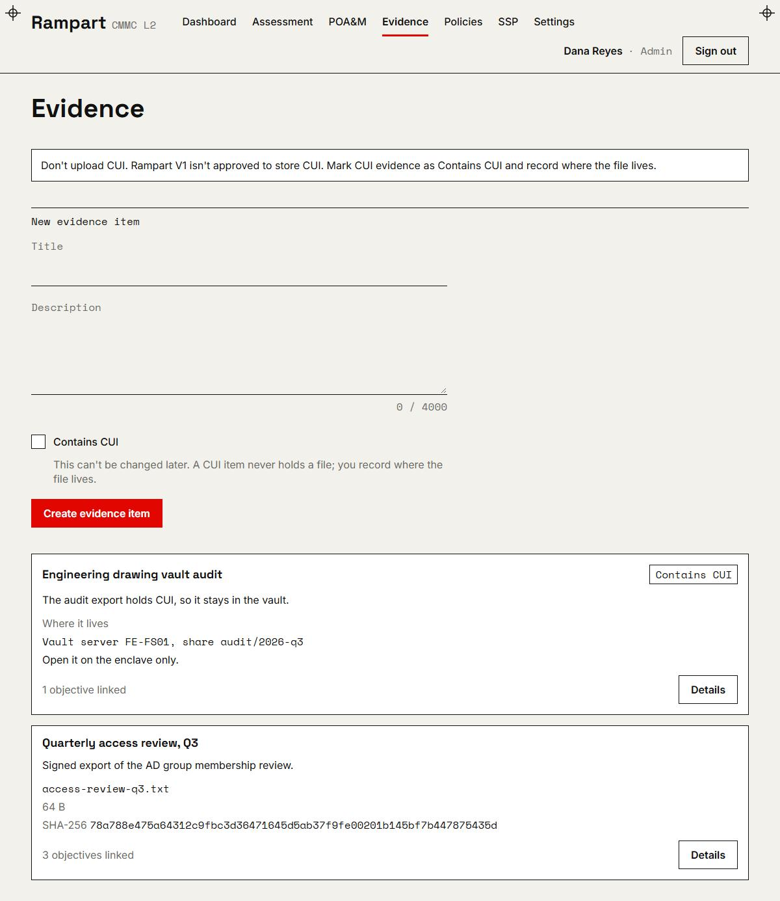
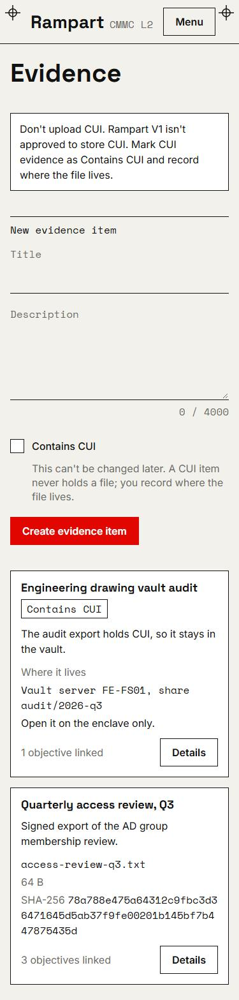
Policies
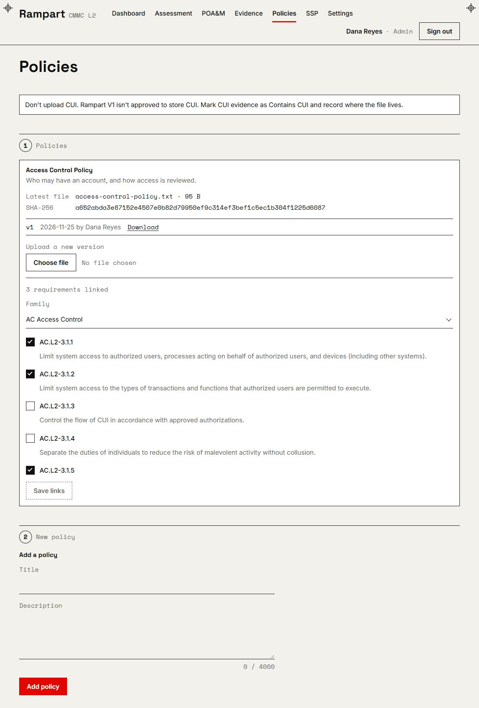
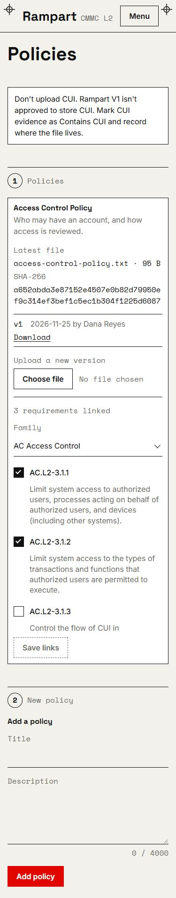
SSP
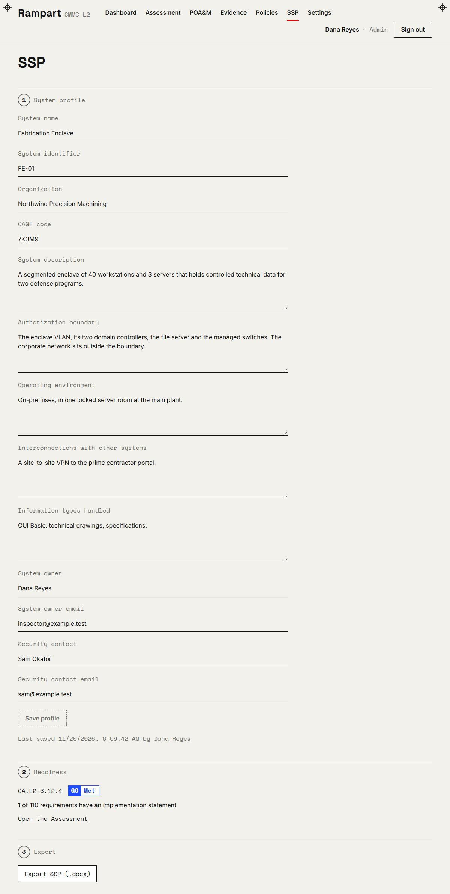
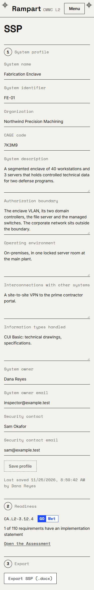
Settings
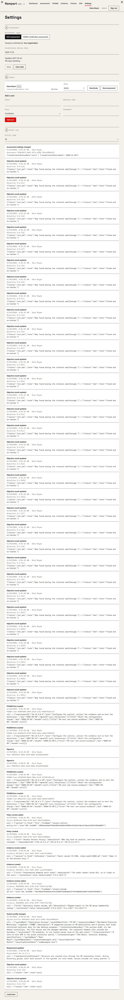
Proof
5 of 6 rows are met; the .docx has not been opened in Word by anyone but its engineer.
| Criterion or feature | Result | Checked by | How |
|---|---|---|---|
| CI green on the final PR | met | this report | all 5 checks on #13 read as success (verify and e2e on two systems, gitleaks) |
| SSP .docx opens in Word or LibreOffice | not checked | engineer's tests | engineer opened it once (31 pages); reviewer did not |
| Catalog counts and point values | met | reviewer | all 110 requirements checked against 32 CFR 170.24, 0 mismatches |
| Rule cases (110, -203, 88/87, barred, 180 days) | met | reviewer | 704 then 707 tests; 46 mutations, 43 caught, 1 equivalent |
| End-to-end smoke path (steps 1 to 6) | met | reviewer | 11 e2e tests pass; 11 features.md rows driven in a browser |
| Phone layout, no horizontal scroll | met | this report | page width equalled 375 on all 7 screens |
Not checked by this report
- The six palette tokens, 16 px text floor and 4.5:1 contrast: left to
e2e/look.spec.tsand the reviewer; I only looked at the screens. - The reviewer's round-1 and round-2 comments were read, but I did not re-run
pnpm verifyor the e2e suite. - Review round 1 found 3 FIX items (a binary-looking
PoamForm.tsx, a placeholder in the PR body, hollow what-if Exit tests); PR #14 fixed them and round 2 confirmed.
Risks and undo
Sign-in and the four migrations are one-way doors, but all are additive; reverting the merge leaves tables unused.
| Risk | Undo |
|---|---|
Auth turned on for every routeapps/api/src/auth/, PR #5 | Revert PR #5's merge; user and session rows stay unused. |
Four additive migrationsapps/api/db/migrations/0001 to 0004 | Revert #13's merge commit; the local database keeps its tables. |
Audit table is append-only by trigger0002_audit_append_only.sql | Drop the two triggers in a new migration; never edit 0002. |
Uploaded files, no CUI checkapps/api/storage/local.ts | Delete the folder at STORAGE_PATH; V1 is not approved for CUI. |
Public API is new and unversionedapps/api/src/contract/ | Nothing outside this repo calls it yet; change it with the web app. |
Dev server serves the HTML with no CSPapps/web/package.json | Don't host it; needs a production build behind a header-setting server. |
How it fits together, as built
The code matches the plan's parts; the web app also imports the API contract, and the SSP route reads more than the catalog.
flowchart LR W["apps/web pages"] -- "HTTP JSON" --> RT["api/src/routes/index.ts"] W -- "types and zod schemas" --> CT["api/src/contract"] W -- "evaluateAssessment for what-if" --> RU["rules/evaluate.ts"] RT -- "deny-by-default guard" --> GD["auth/guard.ts"] RT -- "route handlers" --> RP["*/repository.ts"] RP -- "evaluate, eligibility" --> RU RU -- "REGULATION data" --> RG["rules/poam/regulation.ts"] RU -- "points, objectives" --> CA["catalog/load.ts"] RP -- "queries, recordAudit" --> DB["db/schema.ts"] RP -- "put, get by sha256" --> ST["storage/local.ts"] RT -- "SSP request" --> SS["ssp/model.ts, render.ts"] SS -- "requirement text" --> CA
Differences from the plan
- The web app imports
@rampart/api/contract(browser-safe schemas and constants). The plan's diagram shows only HTTP; this is how the zod schemas are shared. - The dashboard also imports
REGULATIONfrom rules, to show the 88 line from data rather than a literal. - The SSP route builds its outline from the assessment, POA&M, policies, evidence and profile repositories as well as the catalog; the plan drew only catalog.
- Added after the plan:
auth/guard.ts(deny-by-default) andaudit/record.ts, called inside every write's transaction. - The sprint scope added a
poam_missingrule (REGULATION v1.2.0): see the decisions table.
Key decisions
Humans set the baseline, the catalog source, CI and the look; agents settled the regulation's numbers and five small defaults.
| Decision | By | Why | Instead of | Consequence |
|---|---|---|---|---|
| SPRS points 44 at 5, 14 at 3, 51 at 1 | agent | The research's split gave a floor of -196, not -203 | 42 / 14 / 54 | Missing SSP gives "incomplete", not a score |
| ACCEPT needs an open POA&M per Not Met item | agent | 32 CFR 170.24(c)(2)(i)(B)(6) | Score of 88 alone | New poam_missing blocker |
Merge the plan PR straight to main | human | Simpler for one repo | A staging branch | The human still merges #13 (migration gate) |
| Catalog built from the NIST PDFs | human | They are the normative text | Typing from memory | Converter script and recorded checksums |
| Look C, Inspection, with C's ruler | human | Liked the manufacturing feel, fewer colors | The Shop Floor variant | Six colors only, enforced by e2e |
| CI required from the first slice | human | "Make no mistake" | Adding it later | Verify, e2e and gitleaks gate every PR |
| "Today" is the UTC date | agent | Contract documents UTC days | A time-zone setting | Countdowns can be a day off in the US evening |
Objective [a] IDs for 23 single-statement requirements | agent | Matches the CMMC guide; keeps 320 | Unlettered IDs | Changing it needs a catalog bump and data migration |
| No real CUI in V1 | human | No approved host | Encrypted storage now | Flagged items store a reference only |
What's left
1 to do now, 1 before hosting, and a handful of someday cleanups.
Fix next
- The human merges PR #13 (gate 6, migrations); undo is a revert of the merge commit.
- Run the queued SSP template research and compare it to the exported .docx.
- Decide on "today" as the UTC date; a time-zone fix needs a setting or the browser offset.
Before hosting
- Serve a production build with CSP and security headers;
pnpm startuses the Vite dev server and helmet covers only/api. - Parked ideas: encrypted CUI storage, M365 app deployment (
pod-docs/ideas/).
Someday
- Merge duplicate code: three Conditional-status label copies, two
formatSize(KiB vs KB), repeatedactorOfandutcDate. - Delete the unreachable
PlaceholderPageinapps/web/src/App.tsx. - Add
with { type: 'json' }to the catalog import so the Playwright resolve hook can go. - Next plans: OSCAL export, evidence integrations and SSO, Rev 3, SPRS submission.